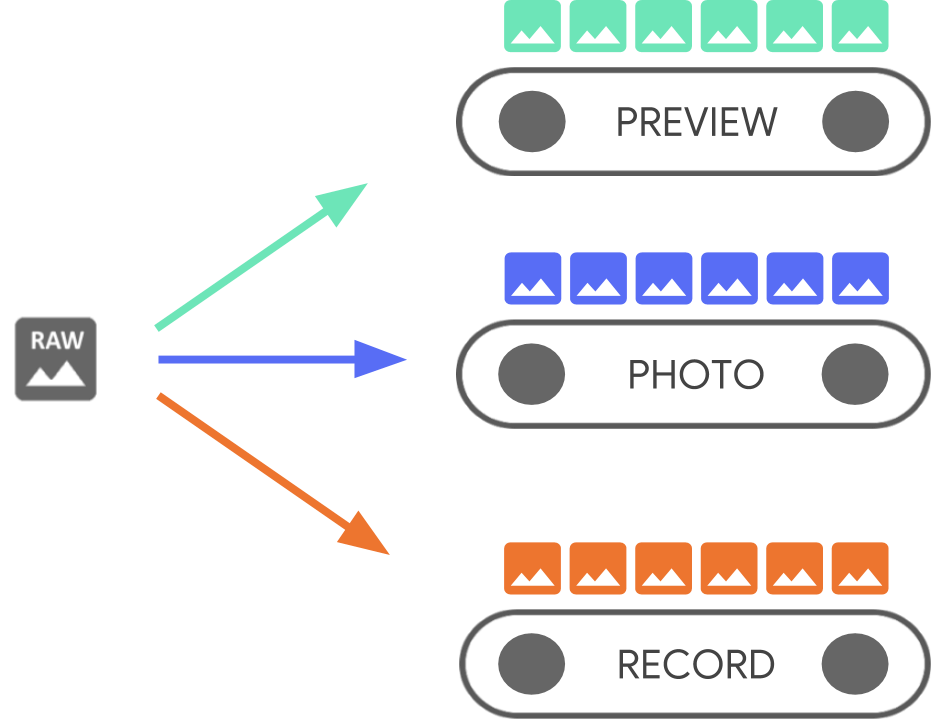

Android Camera Preview
现如今，每一台Android设备基本都有多个摄像头，基本可以分为两类，前置摄像头与后置摄像头。在API中，每一个摄像头硬件，称之为一个 CameraDevice。我们开发者关心的是，每一个 CameraDevice 同时会输出多个数据流。

此图来源于 Google I/O 2018， 从图中，可以看到，摄像头获取到的数据流会转换不同的数据流来交由不同的逻辑模块进行处理。为什么会这样子做呢？在不用的场景中，数据可能会有不同的优化策略，用来更好的适应对应的场景。
顾名思义，SurfaceView 是一个视图，继承自 View。同时内嵌 Surface 。SurfaceView 可以通过 SurfaceHolder 去访问对应的 Surface。
SurfaceView 的生命周期：
我们可以通过实现 SurfaceHolder.Callback可以获得对应生命周期的回调：
public interface Callback {
/**
* 在Surface第一次创建后，立即回调到这个方法中
*/
public void surfaceCreated(SurfaceHolder holder);
/**
* 当Surface的结构（格式/大小）发生变化时，立即回调，此方法至少会被调用一次
*/
public void surfaceChanged(SurfaceHolder holder, int format, int width, int height);
/**
* 当 Surface 被销毁的时候，会立即回调到这个方法中。
*/
public void surfaceDestroyed(SurfaceHolder holder);
}
在使用摄像头的过程中，我们使用 SurfaceView 来实现摄像头数据的预览。其中用来绘制图像的就是 Surface。它是原始图像缓冲区（Raw Buffer）的一个句柄，也可以这样子理解，相当于C++中的一块内存句柄。通过句柄 surface 可获取对应的原始图像缓冲区, 原始图像缓冲区（raw buffer）中存储的即是图像的原始像素数据。
Surface不仅使用在 CameraView 中， 我们正常的View绘制到屏幕上也是使用的 Surface。
在来看一下，Camera启动代码：
mCamera = Camera.open(cameraId); // 启动相机
mCamera.setPreviewDisplay(surfaceView.getHolder()); // 设置 Preview 的View
// mCamera.setPreviewTexture(SurfaceTexture); 使用surfaceTexture 来显示
mCamera.startPreview();
在上述代码中，就可以实现相机启动，并且在 surfaceView 中显示预览。
/**
* Sets the {@link Surface} to be used for live preview.
* Either a surface or surface texture is necessary for preview, and
* preview is necessary to take pictures. The same surface can be re-set
* without harm. Setting a preview surface will un-set any preview surface
* texture that was set via {@link #setPreviewTexture}.
*
* <p>The {@link SurfaceHolder} must already contain a surface when this
* method is called. If you are using {@link android.view.SurfaceView},
* you will need to register a {@link SurfaceHolder.Callback} with
* {@link SurfaceHolder#addCallback(SurfaceHolder.Callback)} and wait for
* {@link SurfaceHolder.Callback#surfaceCreated(SurfaceHolder)} before
* calling setPreviewDisplay() or starting preview.
*
* <p>This method must be called before {@link #startPreview()}. The
* one exception is that if the preview surface is not set (or set to null)
* before startPreview() is called, then this method may be called once
* with a non-null parameter to set the preview surface. (This allows
* camera setup and surface creation to happen in parallel, saving time.)
* The preview surface may not otherwise change while preview is running.
*
*/
public final void setPreviewDisplay(SurfaceHolder holder) throws IOException {
if (holder != null) {
setPreviewSurface(holder.getSurface());
} else {
setPreviewSurface((Surface)null);
}
}
/**
* @hide
*/
public native final void setPreviewSurface(Surface surface) throws IOException;
它是用来控制surface的一个抽象接口。可以通过SurfaceHolder来控制surface的尺寸和格式，修改surface的像素格式，监视surface的变化等等，SurfaceHolder是SurfaceView的典型接口。
使用SurfaceHolder来修改surface 与直接控制SurfaceView来修改surface不同之处是，前者需要使用 lockCanvas()。
与 SurfaceView 是 Surface 和 View 的结合类似, GLSurfaceView是将SurfaceTexture 是 Surface 和 GLES texture 的结合。
SurfaceTexture 提供了 onFrameAvailable, updateTexImage方法来方便生产者与消费者来使用与该 SurfaceTexture 绑定的 texture。
一般使用逻辑:
SurfaceTexture 在创建时即会创建作为消费者的 BufferQueue,后面的 updateTexImage 即从 BufferQueue 中取出一个 buffer。